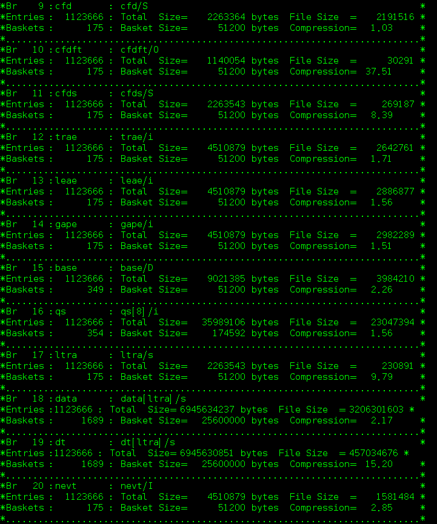
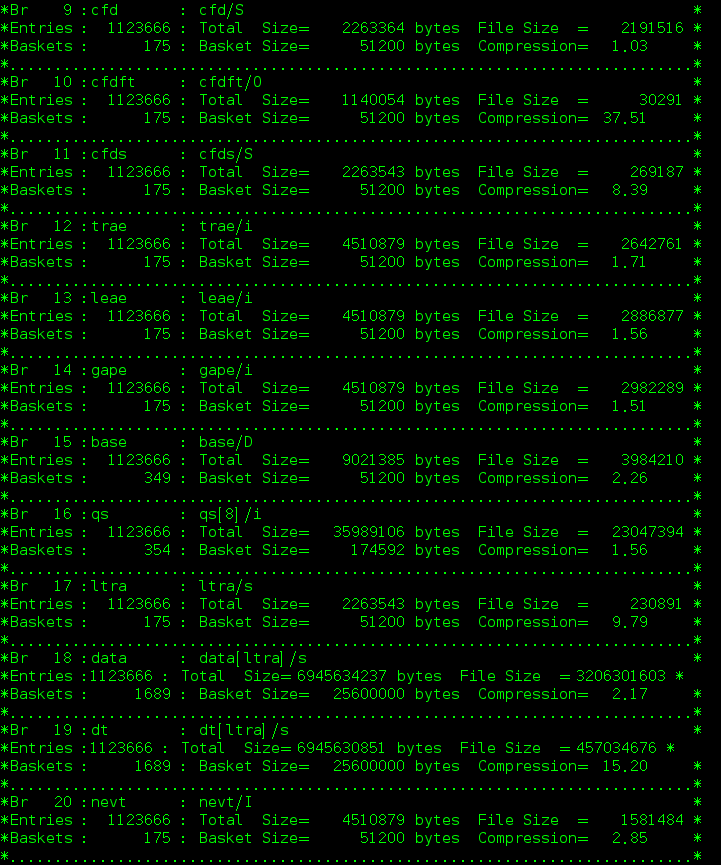

数据解码¶
Decode 程序用来将同一轮数据不同采集卡采集的数据转为一个 ROOT 文件。用户的物理分析以本程序产生的 ROOT 文件为基准。
用户首先需要修改 UesrDefine.hh 文件中的定义
#define RAWFILEPATH "/home/wuhongyi/data/" //原始二进制文件的路径
#define RAWFILENAME "data" //原始文件的文件名
#define ROOTFILEPATH "/home/wuhongyi/data/" //要生成ROOT文件的路径
#define TimesHist 3600 // second 直方图参数,设置比该轮运行时间长即可
#define Crate0
#define Crate0num 5 //该机箱中使用插件数
const int Crate0SamplingRate[Crate0num] = {100,100,100,250,250};//分别指定每个插件的采样率 100/250/500三种采样率 0为跳过该插件
用户需要修改：
原始二进制文件存放目录
生成 ROOT 文件存放目录
文件名
机箱中使用采集卡个数
每个采集卡对应的采样频率，如果采样频率设置为0，则忽略该采集卡的数据
修改之后执行以下命令编译程序：
make clean
make
编译成功之后将生成一个可执行文件 decode，程序运行方式：
./decode [RuNnumber]
其中 [RuNnumber] 为想要转换的文件运行编号。
例如：
./decade 3
ROOT File Branch：
sr(short): sample rate，100/250/500，This value is specified in UesrDefine.hh. / 该数值由 UesrDefine.hh 中指定
pileup(bool): 堆积标记。
outofr(bool): 是否超量程标记。
cid(short): 机箱编号
sid(short): 采集卡所在插槽编号
ch(short): 采集卡通道
evte(unsigned short): 梯形算法的能量
ts(long int 64 bit): 时间戳
ets(long int 64 bit): 外部时间戳
cfd(short): cfd 数值
cfdft(bool): cfd 数值是否有效
cfds(short):cfd source，仅适用于 250/500 MHz 采集卡
trae(unsigned int): 能量梯形上升段积分
leae(unsigned int): 能量梯形下降段积分
gape(unsigned int): 能量梯形平台段积分
base(double): 能量梯形算法的基线
qs(unsigned int): 八个QDC面积的积分
ltra(unsigned short): 波形采集点数
data(unsigned short): 波形数据
dt(unsigned short): 为了方便直接查看每个波形，添加了一个数值从0 - N-1 的数组
nevt(unsigned int): 该事件在本文件中的编号
下图展示一个文件中的 Branch 定义：
 

每轮数据转换结束，本文件夹内均会生成一个 txt 文件，该文件统计了采集卡每个通道的以下信息：
Mod: 采集卡标记，从0开始
Channel: 采集卡通道标记，0 - 15
OutOfRange: 信号幅度超出模数转换模块范围的事件数
Pileup: 标记为堆积的事件数
CfdForcedTrigger: cfd强制触发事件数（cfd未过阈值）
Energy->0: 计算梯形能量小于 0 的事件数（计算结果小于 0 的直接被标记为0了）
WaveformCount: 记录波形的事件数
TotalEvent: 总的输出事件数
每轮数据转换结束，本文件夹内均会生成一个 ROOT 文件，该文件统计了采集卡每个通道的计数率.